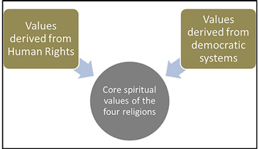
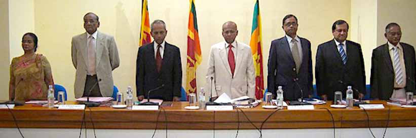
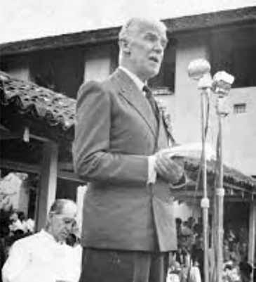
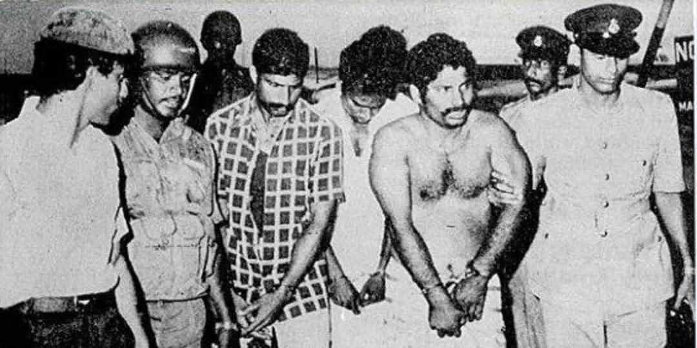
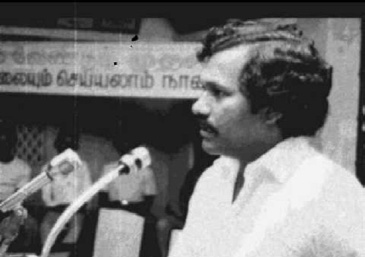
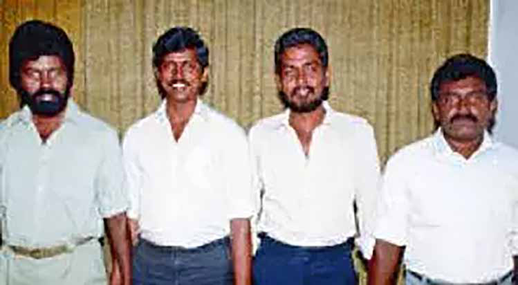

Special Article
Special Article
Jaffna Monitor hellojaffnamonitor@gmail.com 43 Special Article PART 01 BY: Jeevan Thiagarajah Former Governor Northern Province/ Former Member Commissioner Election Commission. Killings, Truth, Justice and Healing amongst Tamils

Jaffna Monitor
hellojaffnamonitor@gmail.com
44
The elephant in the room
This piece written about events which
unfolded commencing the 70’s captures a
transition from political processes to militancy
and within the elimination or disbanding of
armed groups and the silencing of advocacy
and civil expression contesting the will of the
primary proponents of militancy. It requires
empathy for the feelings of those who survived
as victims, imagination of the last moments of
those whose lives were extinguished and even
going into the minds of those responsible in
the planning and execution.
The growth of militancy from peaceful politics
is dark and troubling. The idealism replaced
by the will of the gun becomes clearly evident.
In the process killing and silencing of dissent
was the means and order of the day. Be it
within groups, on groups, amongst groups and
civilians unconnected to groups. Net result
being lives extinguished. Scores more were
forcibly led to war, never to return home again.
Very many suffered immense pain in mind
and body. We have to date made no effort to
account and be responsible for the hundreds
of killings, disappearances and pain amongst
Tamils caused by Tamils in the absence of a
formal process which enables it.
I recall seeing the head of the suicide bomber
who assassinated Dr. Neelan Tituchelvam
on Kynsey Road and asking myself how
did a human being become a human bomb
exploding with clinical precision. It was a
mind boggling example of the extent to which
human beings had become programmed to kill
and be killed.
This piece does not focus on what groups did
by way of assassinations, killings, torture or
disappearances of those who they fought with
or eliminated i.e. armed forces and police and
politicians from mainstream political parties.
That is for a national process to examine.
Also set aside are those killings and atrocities
carried out by the armed forces on the
commands of select government functionaries
since that is the subject of existing national
and international narratives and testimonies
and continuing scrutiny.
Conceptual framework for
Reconciliation
Reconciliation is a complex concept because
of its multidimensional nature: one can
approach it through a variety of disciplines
(Torrent Oliva 2011:20). The first one focuses
on reconciliation as an outcome; a state in
which parties have changed their relationships
and are mutually recognising each other’s
goals and interests in a peaceful environment
(Howard 2004:197; Bar-tal and Bennink
2004:11–15). The second perspective shifts
attention to how reconciliation unfolds vis-à-
vis motivations, goals, beliefs, and emotions
of parties. According to this perspective,
the victim and the perpetrator have an
opportunity to transform the nature of their
relationship into one that facilitates the
emergence of a new social context that is
accompanied by possibilities for a peaceful
future (Daly and Sarkin 2004:180–182; Maoz
2004:225; Lederach 1997:101–110). Conceived
as a process, reconciliation places weight not
only on ending violence or conflict, but also
on the steps that lead to the construction
of new relationships in which both victims
and perpetrators benefit from the new
environment. The process takes place in efforts
and activities that are deliberately meant to
address unresolved conflict. I understanding
is that as long as people previously involved
in conflict do not undergo this process, the
conflict persists and the potential for relapse is
ever present.
Jaffna Monitor
hellojaffnamonitor@gmail.com
45
There is a general consensus that desired
outcomes can be successfully achieved if
the process embraces and promotes five
fundamental prerequisites – truth, apology,
forgiveness, reparation and promoting
encounter. These should be implemented in
chronological order as follows:
• The truth, or a close approximation of
it, needs to be exposed to enable parties
to understand their common history: an
important basis for shared beliefs. However,
appropriate mechanisms are needed to deal
with complex situations since parties may
find it difficult to eliminate bias in their
narratives (Daly and Sarkin 2004:146).
• Apology marks the formal acceptance of
responsibility by perpetrators, and is the
basis for forgiveness by victims.
• Forgiveness embodies the values of love,
empathy and mercy. Together with truth
and apology, forgiveness constitutes the
moral foundation of the reconciliation
process.
• Reparation involves the retribution the
perpetrator needs to pay to the victim in
order to restore lost relationship.
The five prerequisites are to be pursued in a
context of justice. But yet another challenge
arises as to which approach to justice best
serves the goal to sustain reconciliation.
Lessons Learnt Reconciliation
Commission (LLRC)
The Commission expresses the view that
“the country may not have been confronted
by a violent separatist agenda, if the political
consensus at the time of independence
had been sustained and policies had been
implemented to build up and strengthen the
confidence of the minorities around a system
which had gained a reasonable measure of
confidence.” (8.137)
The political grievances of the Tamil
community stem from the breakdown of this
consensus and the dismantling of the political
contract it sustained.
The LLRC’s vision of the Sri Lankan identity is
multi-ethnic and multi religious. It is based on
full compliance with and observance of human
The LLRC Commissioners


Jaffna Monitor
hellojaffnamonitor@gmail.com
46
rights that guarantees equality of citizenship
for all. It is reinforced by the core moral and
spiritual values shared by the four major world
religions.
The value framework in the Report includes
the following:
Truth. In all matters the commitment to the
truth is a precondition of reconciliation. In
regard to the past roots of the conflict, the
LLRC advocates a searching reappraisal.
In regard to the suffering caused by the
conflict, the deaths of civilians, the missing
persons and disappearances the truth must
be fully uncovered both for the purpose
of healing and bringing a closure to the
anguish of survivors as well as for the
purpose of ensuring the accountability
of those who committed the crimes and
violations of human rights.
Transparency. Truth goes with transparency
– the conditions in which actions must be
taken so that the truth is accessible to all
the concerned persons. Transparency that
provides full information to the concerned
citizens would be an essential condition of
reconciliation in all the actions taken on
the issues that have been listed. The LLRC
stresses that transparency goes together
with the right to information.
Justice and Accountability. The LLRC
report deals with accountability in three
different contexts. The first is in the context
of the war and the specific crimes and the
violations of human rights committed in
the course of the war. The second is the
observance of human rights in post conflict
conditions. The third is accountability
pertaining to the roots of the conflict
and the political processes that led to its
escalation.
These three dimensions of justice and
accountability reinforce and temper each
other in the LLRC’s approach to justice and
reconciliation.
Status quo in Ceylon on the eve of
Independence
The Soulbury Commission when it
recommended the Constitution for an
independent Ceylon regarded “communalism”
or ethnicity as being the greatest impediment
to the evolution of a united Ceylonese people.
With the objective of mitigating the effect
of the ethnic divisions, the Commission
went to the extreme of removing all forms of
communal representation in the democracy
it established, hoping that the rule of the
majority that will emerge thereby will develop
on secular lines shorn of the ethno-cultural
dimensions.
They entertained the unrealistic hope that
the divisive character of ethnic identities will
be removed from the polity and effaced. At
the same time the Soulbury Commission
Lord Soulbury

Jaffna Monitor
hellojaffnamonitor@gmail.com
47
recognized the deep –seated contradictions
that were unique to Sri Lanka. It pointed
out that the equality of citizenship which the
new constitution upheld had to be achieved
in a demographic situation in which there is
a permanent majority of the Sinhala people
much larger in size than all other ethnic
groups (Tamil, Muslim, Burgher and others)
put together. The proportions today are in
the range of 75% Sinhala to 25% of all other
minorities.
The Soulbury Commission observes that
“the character of the majority–minority
relations have been consequently shaped by
these realities and governed by deep-seated
pre-dispositions that were entrenched in
the consciousness of both the majority and
minority. The Tamil community and other
minorities see themselves in a position of
a permanent minority and perceive the
Sinhala community as enjoying a position
of an “unassailable majority”. These were the
principal causes of apprehension and distrust.
The Soulbury Commission concluded “that
while constitutional and administrative
safeguards were necessary to deal with these
problems none of these safeguards will be
adequate to guarantee equality of citizenship
without a fundamental change in the pre-
dispositions of both the majority and minority
towards each other.” (LLRC 8.157).
The Soulbury Commissioners were objectively
critical of the attitudes of both communities.
The Soulbury Commission pointed out that
elements of discrimination were perceived
by the Tamil community even when actions
are “based on reasons of sound policy”. It
urged that the Tamil minority while focusing
on their real grievances must guard against
misperceptions of this type. At the same time,
it emphasized that the majority community
must “take the utmost care to avoid giving
cause for any suspicion of unfairness or
partiality” and stated that this perception will
persist until the minorities have an equitable
share of power and responsibility for the affairs
of government.
What the Soulbury Commission expected
was a process of confidence building which
would develop a strong base of mutual trust
between the minorities and the majority
leading to an equitable sharing of power and
resources. What occurred however was quite
the opposite.
In the newly emerging democracy, Sri Lanka’s
post-independence English-speaking elites
sought to respond and contain the electoral
pressures with political ideologies which were
ethno-centric, promoting the interests of their
own ethnic constituency. They left little space
for a multi–ethnic inclusive national identity.
A decade after independence the island
erupted in the first outbreak of ethnic violence
in 1958. The conditions were set for a long
spiral of violence and counter-violence.
Sri Lanka’s civil war which started in 1983 and
went through several phases, interspersed by
failed peace efforts is commonly divided into
Eelam wars I (1983-1987), II (1990-1994), III
(1995-2002) and IV (2006-2009), although
the divide between ‘war’ and ‘peace’ was never
as clear as this timeline suggests – war was
preceded by other forms of violence including
assassinations, riots, suicide attacks and
killings of civilians, whilst periods of ‘peace’
were frequently preceded by high levels of
violence.
Emergence of Tamil armed groups in
dissent
It is virtually impossible to set a date for
the genesis of Tamil militancy in Sri Lanka.
After 1956 riots, a group of Tamils organized
Jaffna Monitor hellojaffnamonitor@gmail.com 48 and opened fire at the Sri Lankan army in Batticaloa. Two Sinhalese were killed when 11 Tamils, having between them seven rifles, fired at a convoy of Sinhalese civilians and government officials one night at a village near Kalmunai. There was another attack on army soldiers in Jaffna after Colombo stifled the Federal Party "satyagraha" in 1961, but no one was killed. Some of 20 men associated with the Federal Party thought Gandhisam had no place in such a separate state. At a meeting in Colombo, they christened their group Pulip Padai (Army of Tigers). On August 12, 1961, the Pulip Padai members converged at the historic Koneswaran Temple in the eastern port of town of Trincomalee and, standing in its holy precincts facing the sea took a solemn oath to fight for a Tamil homeland. A student wing called the Manavar Manram (student's council) was set up in 1963. In 1969, Thangathurai and Kuttimani and a few friends gathered in Jaffna to form an informal group that the former wanted to name the Tamil Liberation Organization (TLO). It included among others Periya (big) Sothi, Chinna (small) Sothi, Chetti, Kannadi (a radio mechanic), Sri Sabaratnam (TELO leader) and V. Prabhakaran (LTTE supremo). One man who drifted by but broke away to chart an independent course was Ponnudorai Sivakumaran, who was to become one of the first martyrs to the Tamil cause. Earlier, in 1970, Ponnudorai Satyaseelan founded the Tamil Manavar Peravai (Tamil Students League), which was joined by Sivakumaran who attempted to assassinate Sri Lankan deputy minister for Cultural Affairs Somaweera Chandrasiri in September 1970 and Alfred Duraiyappah, the Jaffna Mayor, in February 1971. The formation of TUF in 1972 led to the Tamil Elaingyar Peravai (TYL-Tamil Youth League) in January 1973. It was founded by some 40 youths, many of whom subsequently were in the forefront of the militant movement. The TYL drew support from Thangathurai, the TLO leader. Satyaseelan's arrest in February 1973 set off the second round of mass arrests in Jaffna and virtually crippled the TYL as well as the older Tamil Students League. Several young men languished in prison until 1977, Thangathurai and Kuttimani

Jaffna Monitor hellojaffnamonitor@gmail.com 49 although some gained amnesty on the eve of the Kankesanthurai by-election in 1975. The tragic appearance of Tamil insurgents dedicated to violent action against the government was a development in the 1970s becoming militant in 1972, when the government introduced standardization policies on university admission and the 9 accidental deaths which occurred in the course of a police attack on participants of an international Tamil conference held in Jaffna in 1974. The purpose of which was academic and cultural held previously only in Madras and Kuala Lumpur. The police officer who led the attack was promoted and the Mayor of Jaffna who cooperated was killed the following year. Jaffna witnessed its first case of death by cyanide poisoning the next year. Sivakumaran had been lying low for a while, but took an active interest in the 1974 International Tamil Conference in Jaffna. He had been influenced by his parent's pro-Federal Party views. He believed that despite the need for militancy, the Federal Party was important and often compared Chelvanayagam with Mahatma Gandhi and the boys with Subash Chandra Bose. Since breaking off from Thangathurai, Sivakumaran had set up his group, which came to be known as the Sivakumaran's group. On June 5, 1974, Sivakumaran was trapped by the police while attempting a bank robbery in Jaffna's Kopai town. He was 17 years of age and used to carry a cyanide pill. On that day he swallowed it without so much as an afterthought and died almost instantly. Thus, was born Sri Lanka's cyanide culture. In 1974, Jaffna engulfed in protests when Bandaranaike visited the town to open a university campus. The Mayor, Duraiyappah did his best to bring crowds to her meeting. The visit was preceded by several acts of violence which the police blamed on the newly-formed Tamil New Tigers (TNT) of Prabhakaran. Bombs were thrown at a police jeep in Kankesanthurai, a port town. Another bomb went off at the residence of a communist leader who was to be the premier's interpreter. Two underground groups were active in 1975. The Thangathurai group, benefit of Kuttimani, and the TNT, which in informed circles came to be known as the Prabhakaran's group. In January 1975, a group of Sri Lankan Tamils residing in London formed the Eelam Revolutionary Organisation which took the acronym EROS. Although it failed to take roots in Sri Lankan Tamil areas for a long time, it played a key role in shaping the growth of militancy. The Duraiyappah assassination was the first political murder in Sri Lankan's northeast. Chelvanayagam's election victory had queered the pitch for the Eelam campaign. The number of militants in Jaffna then could not have been more than 50. The popular perception among the ordinary Tamils was that the "boys", as the young guerrillas were called with adoration, were acting under the orders, if not the control, of the TUF and that they could and would be caged if need be. On March 5, 1976 Prabhakaran led a raid on the state-run People's Bank at Puttur and escaped with a half a million rupees in cash and jewellery worth 200,000 rupees after holding the employees at gun point. Prabhakaran founded the LTTE on May 5, 1976. From the Tamil standpoint, the 1977 polls were momentous in 3 ways. 1. For the 1st time, one of Sri Lanka's main parties admitted publicly that there existed a Tamil Problem.
Jaffna Monitor hellojaffnamonitor@gmail.com 50 2. For the 1st time, a Tamil party was propelled as the main opposition in the Sri Lankan Parliament. 3. The sweeping outcome in the northeast polls catapulted Tamil militancy. Emergence of Uma Maheswaran and LTTE Early on the morning of August 15, 1977, three unarmed constables stopped 3 boys riding bicycles at Puttur, Jaffna. Without warning, one of the boys took out a revolver and fired, injuring one of the policemen in the thigh. The cyclists escaped. The next day, police shot and killed four persons and wounded 21 others in a bloody shoot-out in Jaffna after the policemen were obstructed from seizing arms carried by some youths. JR, angry at what he thought was the audacity of the "boys", ordered the army into Jaffna, where the old market was almost totally gutted in a fire the Tamils blamed on the security forces. The 1977 anti-Tamil riots had begun. Sinhalese mobs began attacking Tamils outside the northeast. For the first time, a large number of Hindu temples came under attack during the two weeks of arson and rioting, which left more than 300 people dead and many more wounded. Thousands of Tamils left their homes and fled to the northeast for safety. They included an estimated 40,000 Indian Tamils, many of whom became destitute overnight even though they were opposed to the Eelam campaign. Many of them went to Vavuniya in the North, where several voluntary groups helped them to begin a new life. Many were sent to Jaffna by 3 ships. The riots provoked indignation in Tamil Nadu, which until then had remained largely indifferent to the plight of the island Tamils. The DMK, which only 4 years ago had handed over Kuttimani to the Sri Lankan authorities, organized a general strike and a mammoth procession that wound its way through the city to the office of the Deputy High Commissioner of Sri Lanka. But in 1977, no Sinhalese living in Jaffna came under attack from Tamils. Until the Tamil militancy took deep roots in Jaffna, almost 10% of its population was Sinhalese, who were bakers, traders, civil servants and businessmen. The 1977 anti-Tamil riots were different from earlier Sinhalese onslaughts. In September, Thangathurai presided over a meeting at a temple in Thondaman Aru and decided to formally set up a militant group called the Tamil Eelam Liberation Army (TELA) and a political affiliate known as the Tamil Eelam Liberation Organization (TELO). By now, the most active militant groups in Jaffna were the ones led by Thangathurai and the LTTE. In 1977, a soft-spoken land surveyor, Kadirgamapillai Nallainathan, better known as Uma Maheswaran, joined the LTTE. He was made the chairman of the central committee. Prabhakaran, younger to Uma by some 10 years, continued to be the group's military commander but remained largely in the background. In January 1978, Uma and Prabha made their way to Colombo. The two shot M. Canagaratnam, a Tamil MP who had won on a TULF ticket but switched allegiance to the UNP. He was shot and wounded in the Uma Maheswaran

Jaffna Monitor hellojaffnamonitor@gmail.com 51 chest, neck and ribs but died a few months later. Canagaratnam's botched murder blew up Uma’s cover and he gave up the open life. The police, embarrassed that Tamil militants could strike in Colombo, launched a vicious crackdown under the supervision of Inspector T.I. Bastiampillai of the CID. After rounding up several suspects in Jaffna, police issued "wanted" posters for 4 men: Uma, Chellappah Nagarajah, Thanam (who had been once driver to Chelvanayagam) and Kannadi. Little did the police know that one of the four was already dead. Chetti murdered Kannadi in cold blood at Poonagari after breaking out of? the prison in the city of Anuradhapura in 1973. A Split in the LTTE In 1979, after the Thangathurai group shot dead 3 more policemen in Jaffna, JRJ replaced the Proscription of LTTE act with a more draconian Prevention of Terrorism Act (PTA), clamped a state of emergency throughout Jaffna peninsula and sent more troops to the region. He also hand-picked Brigadier T.I. Weeratunge, Chief of the Army, to stamp out "the menace of terrorism in all its forms from the island" by December 31.The crackdown, for the first time, seriously disrupted the militant network. The mutilated bodies of 6 youths picked up from their homes on July 14 were found under a bridge. Because of this disruption, Thangathurai, Kuttimani and Prabhakaran fled to Tamil Nadu. Tamil militancy died down almost totally in 1980, but picked up again from early next year. There were growing differences within the militant ranks, particularly the LTTE which resulted in its split and the subsequent formation of PLOTE by Uma. On April 5, Kuttimani Thangathurai and Thevan were arrested at Mannalkadal, near Point Pedro, while trying to escape in a boat to India. Kuttimani had some gold on him, tried to shoot himself but was overpowered. It was the end of journey both for Kuttimani and Thangathurai, two of the original pillars of Tamil militancy. They were later brutally beaten to death in Colombo's Welikade jail during the July 1983 anti-Tamil riots. The Changing Character of the Militants In 1980, Jaffna University students published a paper called the Unarvu (Sensation) which put forward several Marxist slogans. About the same time the faction of the Tigers which the following year adopted the name of the P.L.O.T.E. started a paper with the name Puthiya Paathai (New Path). This paper took a political line critical of traditional parliamentary politics as well as of the hit and run tactics of the L.T.T.E. After two issues of the latter, Mr. Sunderam, a prominent person in the P.L.O.T.E., was assassinated by the L.T.T.E. while at the printers to bring out an issue of the paper. This was the first internal killing to surface publicly, although there had been several others before. Following this, two L.T.T.E. sympathizers Irai Kumaran and Umai Kumaran were killed by the P.L.O.T.E. Though people were alarmed, these incidents were not taken to be a sign of a deeper malaise. By 1986 these internal killings were to reach epidemic proportions. The students of Jaffna University contributed considerably to the groups of the militant movement. The dedication of many of the students was such that they left their academic careers and went to rural areas and the Eastern Province to work for their organizations. Such persons were by nature intelligent, sensitive and bound to insist on democratic accountability from their leaders. With the rise of internal killings and autocratic leadership, these students became disillusioned.
Jaffna Monitor hellojaffnamonitor@gmail.com 52 By 1985 many of them started quitting their organizations to lead quiet lives. According to the testimony of their friends, several of those students who died, ended their lives in a state of disillusionment. The last three student union leaders up to 1985 had deep seated problems with the L.T.T.E. Two of them left the organization and one died while doing refugee work. By the latter part of 1985 the role of the students in the militant movement underwent a radical change. The students on the whole felt that the militant groups had gone astray and were locked in a war of attrition with each other. They felt this had brought the community to a dangerous brink. The main thrust of student action now was to: reform the militant movement through criticism and persuasion; provide relief for refugees; mediate between the public and the militants; and foster unity among the militant groups. Usually, the students did not go for confrontation with the militant groups but raised specific questions regarding their conduct. In April 1986 a demonstration from Vadamaratchi protesting the killing by the T.E.L.O. of T.E.L.O. members Das and four of his colleagues was fired upon. The students negotiated with the E.P.R.L.F. and P.L.O.T.E. to protect and shelter the demonstrators. The bodies of three demonstrators killed were taken to the University. In doing refugee work the students involved took considerable risks in going to difficult areas. In this role the students were respected and also feared. Until the L.T.T.E.-T.E.L.O. clash, the L.T.T.E. found the student movement useful. Though it no longer provided recruits, its criticisms were mainly directed against the T.E.L.O. One reason for this was that the L.T.T.E.'s actions were more secretive, and could not be directly ascribed. Following the L.T.T.E.-T.E.L.O. clash, the L.T.T.E. moved to suppress the students. This virtually ended the University's role in the militancy. Students of the past who had helped the growth of the militancy with dedication felt that they had been meanly used. The intellectual polish of the students had been useful but the leadership of the L.T.T.E which was dominant by the end of 1986 had a different mind-set - a totalitarian mind-set. To be continued... From left to right: Leaders of EPRLF - Padmanabha, TELO - Sri Sabaratnam, EROS - Balakumaran, and LTTE -Prabhakaran.
